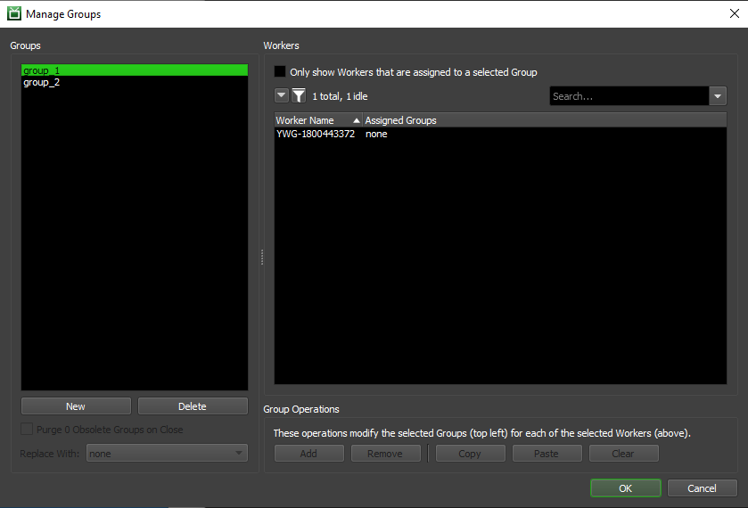
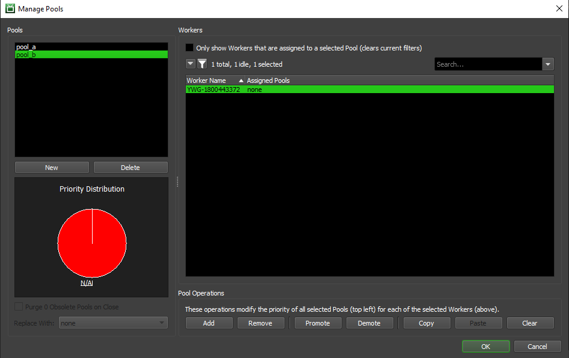

Pools and Groups¶
What are Pools and Groups?¶
Groups can be used to organize your farm based on machine configurations (e.g., specs, installed software, etc). For example, if you have several 64-bit machines with 3ds Max installed, you could assign them to groups like 3dsmax, or 3dsmax_64bit, or simply 3D. Groups have no impact on the order in which Jobs are rendered, they just help to ensure that Jobs render on machines with proper an appropriate hardware/software setup. If you don’t care about grouping your machines, you can simply use the default ‘none’ Group.
Pools are similar to Groups, except that they do affect the order in which Jobs are rendered. Because of this, it is encouraged to use Pools for prioritizing different shows, shots, types of Jobs, etc. If you don’t want to set up Pools on your farm, you can simply use the default ‘none’ Pool. Note that the ‘none’ Pool always has the lowest priority of all the Pools.
Jobs can be added to an optional Secondary Pool. When searching for a Job, a Worker does a first pass using the Primary Pool of the available Jobs. If the Worker doesn’t find any Jobs using the Primary Pool, it then makes a second pass using the Secondary Pool. This system can allow a Job to spread to a Secondary Pool as necessary, and it can also ease the configuration of Pools in the farm if there are lots of Pools and Workers. An example of this is shown below.
Note that the Secondary Pool feature was designed for Job Scheduling Orders that have Pool listed first, and might not work as expected otherwise. For example, if Priority is listed first, a job with lower priority that’s found during the initial Primary Pool scan will be preferred over a job with higher priority that’s found during the Secondary Pool scan. This is because the Secondary Pool scan is only performed if no jobs are found during the initial Primary Pool scan.
Managing Pools and Groups¶
Pools and Groups can be managed from the Monitor while in Power User mode (or as a User with the proper User Group privileges). Just select ‘Manage Pools’ (or ‘Manage Groups’) from the ‘Tools’ menu, or from the Worker panel’s right-click menu.
The dialogs are very similar to each other, but the nuances between the two are described below in detail. Note that if you used the Worker panel’s right-click menu to open these dialogs, they will be pre-filtered to just show the Workers that you right-clicked on. They will also show the same columns that are currently being shown in the Worker list.
Group Management Dialog¶
From here, you can manage individual Groups, and assign them to various Workers. It is a bit simpler than the Pool Management Dialog, which will be covered below in more detail, since it does not have to worry about the order of Groups for a given Worker.
The functions you can perform here are as follows:
Groups: This section displays existing Groups and allows you to manipulate them, or create new ones. Your selection here will determine which Groups will be affected by the Group Operations.
New: This will create a new Group in the Repository, and allow you to assign the Group to different Workers. You will be prompted for a name for the new Group. Group names cannot be changed once the Group has been created. Adding a Group with the name of previously Deleted Group will effectively ‘re-instate’ that Group if it hasn’t been Purged yet (see below).
Delete: This will Delete all of the selected Groups from the Repository, and enable the option to Purge them (described below).
Purge Obsolete Groups on Close: This will purge any obsolete (deleted) Groups from existing Jobs and remove from any Workers that are currently assigned to it. They will be replaced with the Group selected in the drop down. Note that if you choose not to Purge the obsolete Groups right now, you can always return to this dialog and do it later.
Workers: This section displays a list of all known Workers that have connected to your Repository. Your selection here will determine which Workers will be affected by the Groups Operations.
Only Show Workers Assigned to a Selected Group: This option will filter the displayed Workers to only include the ones that are currently assigned to at least one of the selected Groups.
Group Operations: These operations are used to manipulate which Groups are assigned to which Workers. They typically require a selection of one or more Groups and one or more Workers to be active.
Add: This will add all of the selected Groups to all of the selected Workers, if it wasn’t already there.
Remove: This will remove all of the selected Groups from all of the selected Workers, if applicable.
Copy: This will copy the groups from the selected Worker to the clipboard.
Paste: This will paste the groups that were copied using the Copy button to the selected Workers.
Clear: This will clear all the groups from all of the selected Workers. This option does not require a Group to be selected.
Pool Management Dialog¶
The Pool Management dialog functions similarly to the Group Management dialog described above, but with a few added options to deal with managing Pool Ordering for individual Workers.
The functions you can perform here are as follows. Note that a lot of these overlap with the described Group Management functionality described in the previous section.
Pools: This section displays existing Pools and allows you to manipulate them, or create new ones. Your selection here will determine which Pools will be affected by the Pool Operations described below.
New: This will create a new Pool in the Repository, and allow you to assign it to Workers. You will be prompted for a name for the new Pool; not that Pool names cannot be changed once the Pool has been created. Adding a Pool with the name of previously Deleted Pool will effectively ‘re-instate’ that Pool if it hasn’t been Purged yet (see below).
Delete: This will Delete all of the selected Pools from the Repository, and enable the option to Purge them (described below).
Purge Obsolete Pools on Close: This will purge any obsolete (deleted) Pools from existing Jobs and remove them from any Workers that may have them in their list. They will be replaced with the Pool selected in the drop down. Note that if you choose not to Purge the obsolete Pools right now, you can always return to this dialog and do it later.
Priority Distribution: This graph visualizes how many Workers have one of the selected Pools as #1 priority, #2 priority, etc. It also displays how many Workers are not currently assigned to the selected Pools.
Workers: This section displays a list of all known Workers that have connected to your Repository. Your selection here will determine which Workers will be affected by the Pool Operations described below.
Only Show Workers Assigned to a Selected Pool: This option will filter the displayed Workers to only include the ones that are currently assigned to at least one of the selected Pools.
Pool Operations: These operations are used to manipulate which Pools are assigned to which Workers. They typically require a selection of one or more Pools and one or more Workers to be active.
Add: This will add all of the selected Pools to all of the selected Workers, if it wasn’t already there.
Remove: This will remove all of the selected Pools from all of the selected Workers, if applicable.
Promote: This will bump up the selected Pools by one position in all of the selected Workers’ Pool lists. Any selected Workers that are not assigned to the selected Pool(s) are unaffected.
Demote: This will bump down the selected Pools by one position in all of the selected Workers’ Pool lists. Any selected Workers that are not assigned to the selected Pool(s) are unaffected. Note that a Pool cannot be demoted to be lower than the ‘none’ pool – the ‘none’ Pool is always assigned the lowest priority by Workers.
Copy: This will copy the pools from the selected Worker to the clipboard.
Paste: This will paste the pools that were copied using the Copy button to the selected Workers.
Clear: This will clear all the Pools from all of the selected Workers. This option does not require a Pool to be selected.
Preventing Workers from Rendering Jobs in the ‘none’ Pool or Group¶
In some cases, it may be useful to prevent on or more Workers from rendering Jobs that are assigned to the ‘none’ Pool or Group. For example, you may have a single machine that you want to only render Quicktime Jobs. Normally, you could add this machine to a ‘quicktime’ Group, but if there are noe Quicktime Jobs, the Worker could move on to Jobs that are in the ‘none’ Group. If you want this machine to only be available for Quicktime Jobs, you can configure it to exclue Jobs in the ‘none’ Group.
The option to exclude Jobs in the ‘none’ Pool or Group can be found in the Worker Settings in the Monitor.
Pools and Job Scheduling¶
How pools affect the Job selection process is best explained through an example. Note that this example relies on a Scheduling Order where Pools are the primary determining factor of scheduling (such as the default Pool -> Priority -> Submit Date scheme).
Say we need to render Jobs for two different shows, and we’ve already created corresponding pools for each show in Deadline:
show_a
show_b
Now say we have 10 machine in our render farm, and we want to give each show top priority on half of it. To do this, we’d just assign the pools to our Workers like this:
- Workers 1-5:
show_a
- Workers 6-10:
show_b
With this setup, if Jobs from both shows are in the queue, then Workers 1-5 will pick up the Jobs from show_a, while Workers 6-10 will work on Jobs from show_b. This effectively splits our farm in half, like we desired, but with this configuration Workers 1-5 would sit idle once show_a finishes production, even if there are plenty of show_b Jobs in the queue. The reverse would also be true if show_b production slows down while show_a is still ramping up.
To accomplish this second goal of maximizing our resources, we’ll assign the Pools to our Workers as follows:
- Workers 1-5:
show_a
show_b
- Workers 6-10:
show_b
show_a
Now, Workers 1-5 will still give top priority to show_a Jobs, and Workers 6-10 will similarly give top priority to show_b Jobs. However, if there are no show_a Jobs currently in the queue, Workers 1-5 will start working on show_b Jobs until another show_a Job comes along. Similarly, Workers 6-10 would start working on show_a if no show_b Jobs were available.
This concept is also extensible to any number of shows/pools, you just have to make sure to have an even Priority Distribution across your farm (the Priority Distribution graph should help with that). Here’s an example of what the Priority Distribution for a 3-show farm with 15 Workers could look like:
- Workers 1-5:
show_a
show_b
show_c
- Workers 6-10:
show_b
show_c
show_a
- Workers 11-15:
show_c
show_a
show_b
Secondary Pools and Job Scheduling¶
How secondary pools affect the Job selection process is best explained through an example. Note that this example relies on a Scheduling Order where Pools are the primary determining factor of scheduling (such as the default Pool -> Priority -> First-in First-out option). The Secondary Pool feature was designed for job scheduling orders that have Pool listed first, and might not work as expected otherwise.
Let’s say you have 5 pools and 10 Workers. You want each pool to have top priority on 2 machines, but then be able to spread to the rest of them if they are idle. Without using the secondary pool system, you might have something like this:
Workers 0-1: pool_1, pool_2, pool_3, pool_4, pool_5
Workers 2-3: pool_2, pool_3, pool_4, pool_5, pool_1
Workers 4-5: pool_3, pool_4, pool_5, pool_1, pool_2
Workers 6-7: pool_4, pool_5, pool_1, pool_2, pool_3
Workers 8-9: pool_5, pool_1, pool_2, pool_3, pool_4
This can be tricky to maintain if you have to reorganize pools or new Workers are added to the farm. The new secondary pool system can make this easier:
Workers 0-1: pool_1, pool_all
Workers 2-3: pool_2, pool_all
Workers 4-5: pool_3, pool_all
Workers 6-7: pool_4, pool_all
Workers 8-9: pool_5, pool_all
In this case, all jobs could have pool_all as their secondary pool, and will spread to the rest of the farm if machines become available.

{kind=link}
{kind=link}